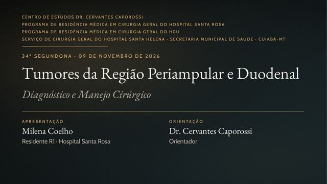

34ª Segundona
Tumores da Região Periampular e Duodenal: Diagnóstico e Manejo Cirúrgico
Milena Coelho, R1 · HSR — orientação de Dr. Cervantes Caporossi
O .pptx tem as transições e animações: é o arquivo para projetar. O PDF serve só para consulta.